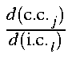

Next: Reaction paths Up: Theory Previous: Translation


Next: Reaction paths Up: Theory Previous: Translation
Internal coordinate force constants, fic, can be derived from the Cartesian coordinates and the Cartesian force constant matrix by use of:
As with the gradients, the calculation of is quite simple, and in done in routine JCARIN.
During the testing of this function, a minor fault in the conventional force calculation was revealed. To reduce any error introduced by finite arithmetic, the Hessian matrix is symmetrized before the vibrational frequencies and normal coordinates are calculated. This is done by operating on the Hessian matrix.
In addition to the requirement that the symmetry of the Hessian should be the same as that of the nuclear coordinates, a second requirement is that the diagonal elements of the Hessian should be equal to the negative of the sum of the off-diagonal elements, that is, that:
During the testing of the internal force constants, very small variations in the force constants were found where no variation was expected. This was traced back to a failure of the above expression. To correct this, the diagonal terms of the force constant matrix were modified. This resulted in a perfect equivalence of equivalent force constants. An incidental benefit would be that the associated error in the calculated frequencies would be eliminated.


Next: Reaction paths Up: Theory Previous: Translation